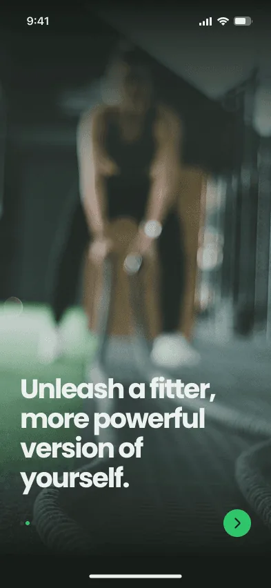
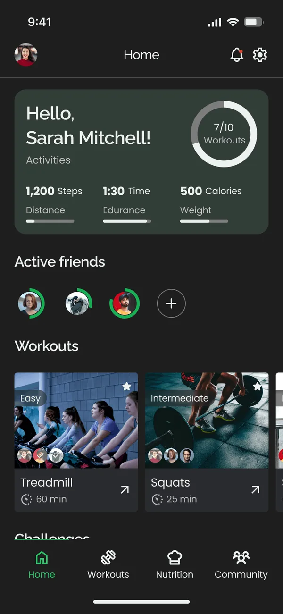
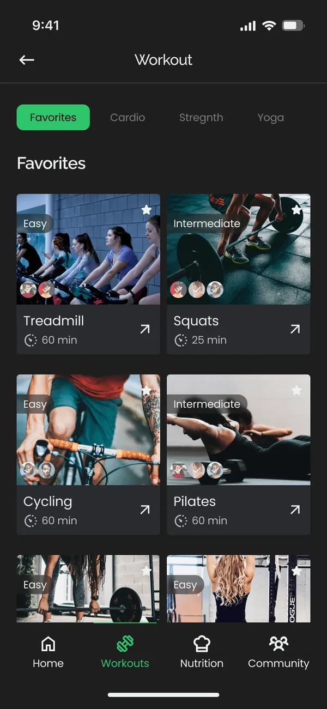
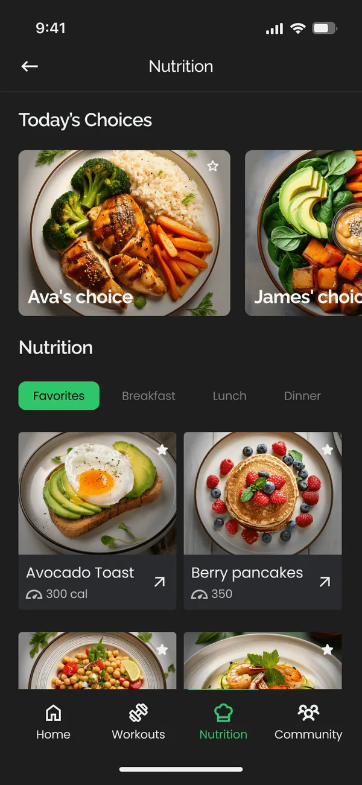
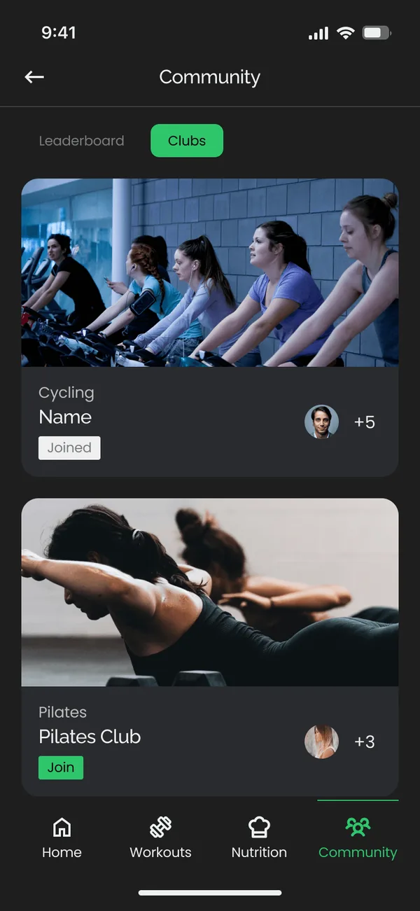
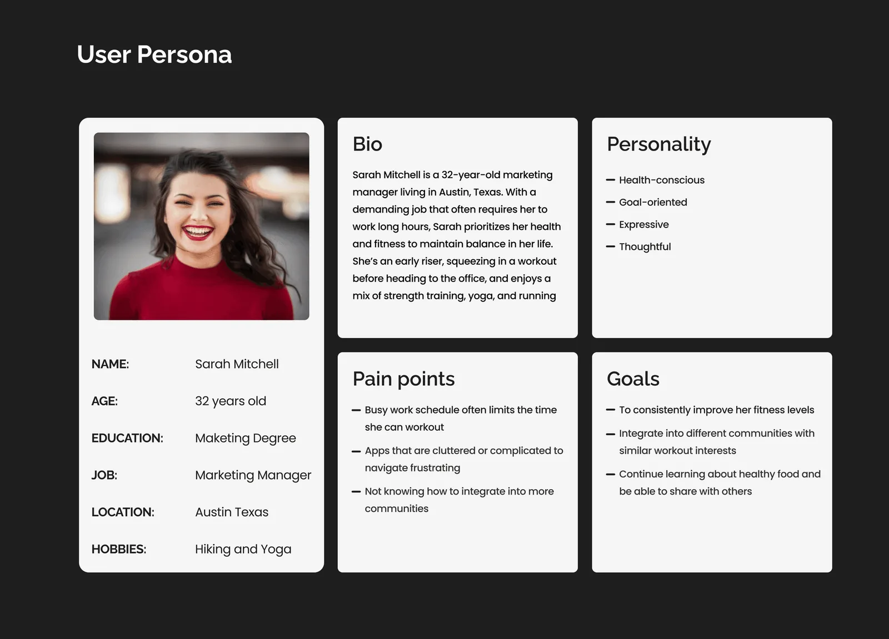
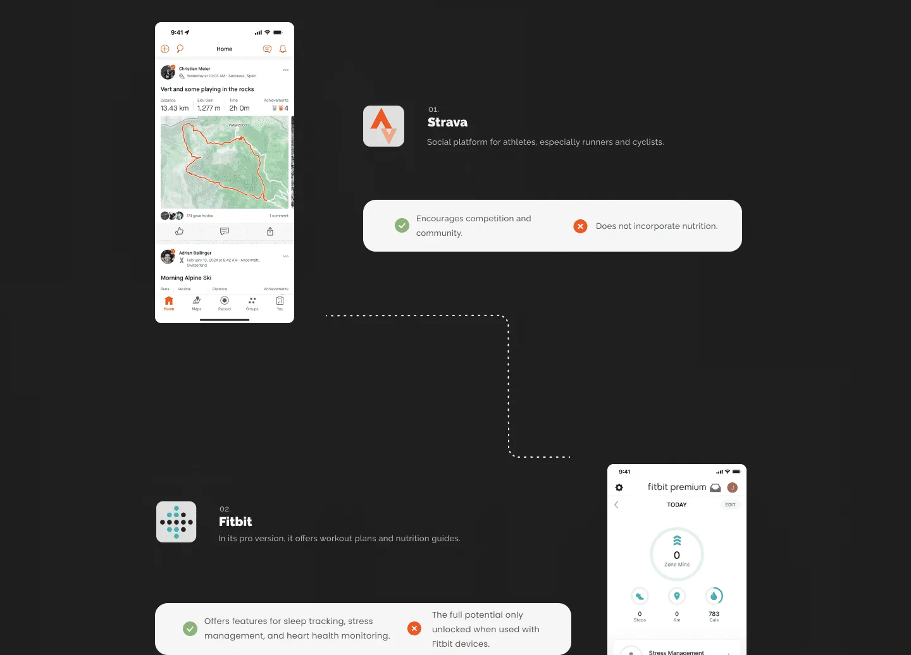
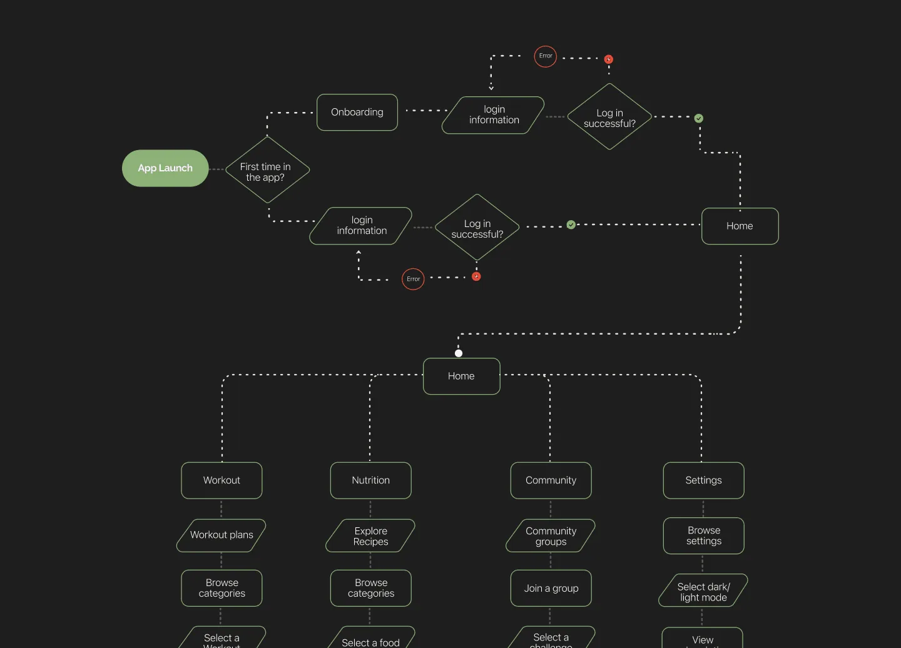

Case study · 03 · Concept app
FitFlex
A concept fitness app with personalized workouts, nutrition, and a community that keeps you accountable.
A concept project to rethink a fitness app’s experience and visual identity, helping people hit their goals with tailored plans, progress tracking, and friends who keep them going.
Workouts, meals and friends in one app
FitFlex brings training, nutrition, and a community together, so progress is something you share instead of something you track alone. The home screen opens on your stats and on what your friends are doing.
See the full experience, step by step: chapter 05 ↓




Plenty of fitness apps, each doing one part
People who want to get fit juggle several apps: one to track runs, one tied to a wearable, one to log meals. Each is good at its own piece, and none of them makes training feel like something you do with other people.
FitFlex is self-initiated. I had an idea for a fitness app and wanted to turn it into a prototype I could show friends.
Motivation fades fast when you train alone
Users struggled to stay consistent with their workouts. The experience felt flat, with little room to connect with friends, share progress, or feel part of a community. They wanted an app that let them train alongside friends and stay accountable.
- 01An unengaging experience that didn’t keep users coming back
- 02Limited social interaction, so no accountability or motivation
- 03No easy way to share progress or train alongside friends
The challenge wasn’t another workout tracker. It was making consistency something you share.
Meet Sarah, then look at what she’s using
I combined a competitive benchmark with empathy mapping and a persona, then mapped the full experience. Sarah Mitchell, 32, is a marketing manager who trains before work. Her pain points: a busy schedule, cluttered apps, and no easy way into fitness communities.


Three findings shaped the direction
- 01The market rewarded community, but no single app paired it well with nutrition and ease of use
- 02Motivation broke down without social accountability and visible progress
- 03A busy schedule and cluttered, hard-to-navigate apps were the biggest barriers to consistency

Answer each finding with one part of the app
Every research finding got a direct answer in the product, held together by a small design system built from scratch.
- What we foundHow the app answers it
- Motivation breaks down without accountabilitySocial features, group challenges, and a progress feed
- No app pairs community with nutritionWorkout, Nutrition, and Community in one app
- Cluttered, hard-to-navigate appsFour clear sections in a simple navbar
- A busy schedule leaves little time to browseA home that shows your stats and friends first
A small system for a bold identity
Typography in Raleway and Poppins, a spacing scale, and a full color palette with light and dark modes, built from scratch so every screen speaks the same language.
One morning with FitFlex
The four sections follow how Sarah actually trains: check in, pick a workout, plan meals, and stay connected.
A bold first impression
The welcome screen sets the tone with a full-bleed photo and one confident line, before getting into the app.
Your progress, and your friends’
Home opens on a weekly goal ring (7 of 10 workouts) with steps, time and calories. Right below, active friends appear with their own progress rings, and each suggested workout shows which friends do it too.
Pick a workout in seconds
Workouts are filtered by Favorites, Cardio, Strength, and Yoga. Every card shows difficulty and duration up front, which matters when you only have a short window before work.
Meals, with a social twist
“Today’s Choices” shows what friends are eating, then meals are filtered by time of day with calories on each card. Nutrition sits next to training instead of in a separate app.
Train together
Clubs and a leaderboard turn solo workouts into shared ones. Each club shows who’s already in, and joining takes one tap.
A concept is a hypothesis until people use it
FitFlex hasn’t been tested with users yet. This is the plan for proving its core idea: that training with friends keeps people consistent.
- The questionHow I’d test it
- Can a new user start a workout in under a minute?Moderated usability test with 5 people who train before or after work. Success: 4 of 5 start one without help.
- Do the four sections make sense at a glance?Same sessions: ask people to find a meal, a club and their weekly progress, and note where they hesitate.
- Do friends actually keep people training?A 4-week pilot comparing people who join a club with people who train solo. Measure workouts per week and who is still active after 30 days.
Consistency is a social problem
The research pointed one way: social features are what keep people consistent. FitFlex is built around that idea, and the test plan above is how I’d prove it.


Let’s build something worth shipping
Briefs, collaborations, or a quick question. I read everything and usually reply within a couple of working days.